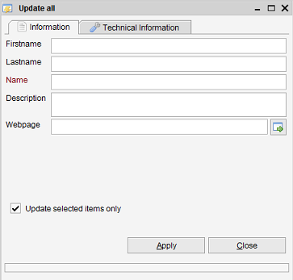

Update All
Menu path: Tools > Update all
or right click on item in the view and select Update all
The Update All function is accessed via the right-click menu.

This functionality allows you to quickly set selected fields within a view to the selected values.
You have the option to update all shown items in the view or to only update
the selected items.